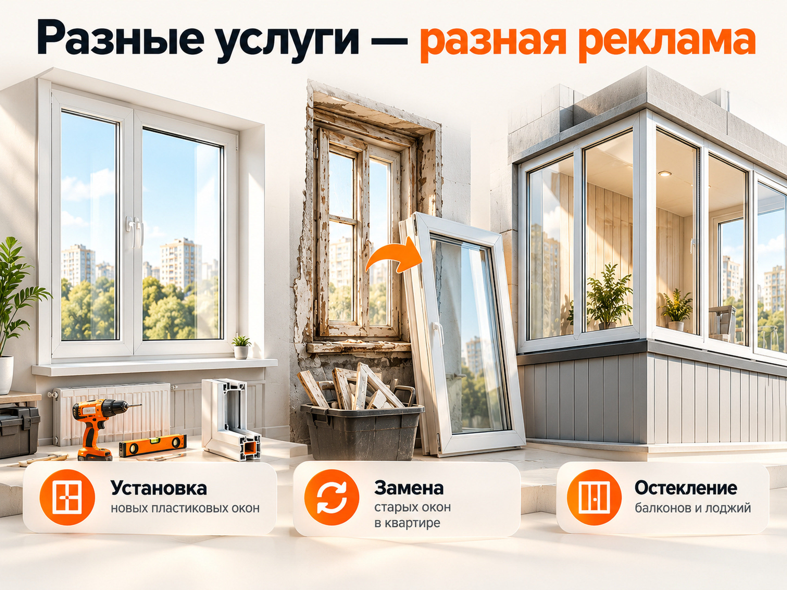
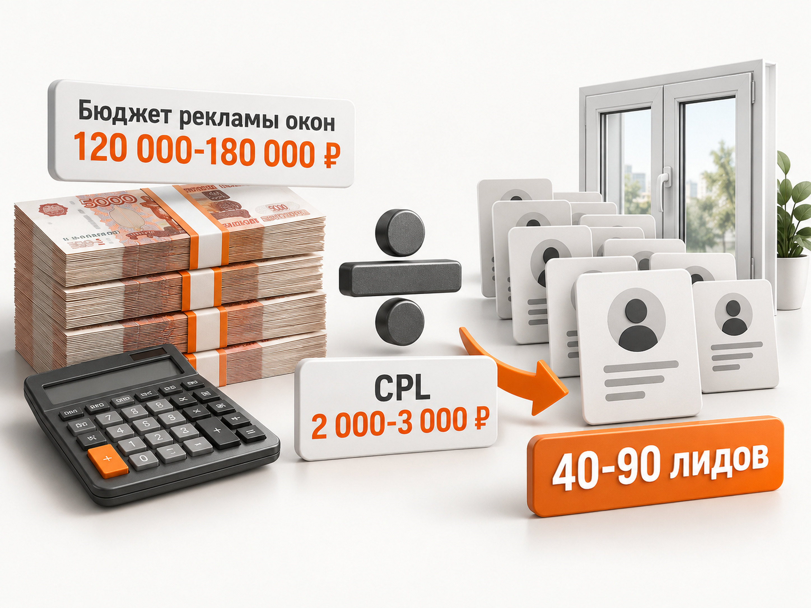

Блог о платном трафике
Продвижение пластиковых окон: как получать клиентов из Яндекса
Продвижение пластиковых окон через Яндекс Директ стоит начинать с рекламы на Поиске по коммерческим запросам. Чтобы получать не просто обращения, а реальные заказы, оконной компании нужны отдельные предложения для установки и замены окон, остекления балконов и частных домов, подходящие посадочные страницы и аналитика до заключённого договора.
Для первоначального расчёта рекламы в региональном городе в 2026 году можно использовать рабочую гипотезу 2 000-3 000 ₽ за обычную заявку. При таком CPL бюджет 120 000-180 000 ₽ способен принести примерно 40-90 обращений в месяц. Это предварительная модель, а не среднерыночная стоимость: реальный результат зависит от региона, сезона, конкуренции и качества сайта.
Главная задача продвижения оконной компании - получать договоры по стоимости, которая укладывается в экономику бизнеса. Поэтому оценивать нужно не только заявки, но и их качество, состоявшиеся замеры и продажи.
Как получать заявки на пластиковые окна из Яндекс Директа
Чтобы получать заявки на пластиковые окна из Яндекс Директа, нужно показывать рекламу людям с конкретной потребностью, приводить их на страницу соответствующей услуги и предлагать понятный следующий шаг: расчёт стоимости или запись на замер.
Начинать я бы рекомендовал с пяти действий.
- Собрать коммерческие запросы. Основной упор сделать на пользователей, которые хотят купить окна, заказать установку или остекление, а не просто изучают характеристики профилей.
- Разделить направления. Установка новых окон, замена старых конструкций, остекление балконов и частных домов требуют разных рекламных сообщений.
- Подготовить конкретные предложения. В объявлениях должны быть реальные преимущества: сроки изготовления, монтаж, гарантия, возможность расчёта стоимости и условия замера.
- Настроить обработку обращений. Звонки, формы и сообщения должны попадать в систему учёта, а менеджеры - оперативно связываться с потенциальными клиентами.
- Анализировать замеры и договоры. После накопления статистики увеличивать бюджет на те рекламные связки, которые приносят реальные заказы.
Пример рекламной связки
Человек вводит запрос «замена пластиковых окон в квартире».
Вместо общего объявления «Пластиковые окна недорого» ему показывается предложение о замене окон с демонтажем старых конструкций и установкой новых.
После перехода пользователь попадает не на главную страницу с десятками услуг, а в раздел замены окон. Там размещены фотографии работ, примеры стоимости, сроки выполнения, гарантия и форма записи на замер.
В такой связке каждое действие соответствует первоначальной потребности человека. Реклама не пытается продать всё сразу, а помогает решить одну конкретную задачу.
При этом заявка на замер и состоявшийся замер - разные показатели. Запись ещё не означает, что клиент согласовал выезд и дождался специалиста. В CRM эти действия нужно учитывать отдельно.
Как разделить рекламу оконной компании по услугам
Рекламные кампании оконной компании лучше сегментировать по потребностям покупателей. Но сегментация не обязательно означает отдельную рекламную кампанию для каждой услуги. При небольшом бюджете направления можно разделить на группы объявлений внутри более крупной структуры.
Основное различие заключается в том, что покупатели новых окон, владельцы квартир со старыми конструкциями и заказчики остекления балконов решают разные задачи.
| Направление | Примеры запросов | Что показывать в рекламе |
|---|---|---|
| Установка пластиковых окон | пластиковые окна с установкой, окна ПВХ под ключ | Цена с монтажом, профиль, гарантия, сроки |
| Замена старых окон | заменить окна в квартире, замена деревянных окон | Демонтаж, вывоз старых рам, монтаж новых окон |
| Остекление балконов и лоджий | остекление балкона цена, застеклить лоджию | Холодное и тёплое остекление, примеры объектов |
| Окна для частного дома | окна ПВХ для коттеджа, остекление частного дома | Расчёт всего объекта, комплектация, энергоэффективность |
Установка пластиковых окон
В этом сегменте часто встречаются покупатели, которые ищут окна для новостройки, ремонта квартиры или нового помещения.
В объявлениях важно уточнять, включена ли установка в стоимость, какие профильные системы используются, сколько занимает производство и какие гарантии предоставляются.
Если компания работает с несколькими ценовыми категориями, их лучше объяснять на посадочной странице, а не пытаться привлечь всех покупателей обещанием минимальной цены.
Замена окон в квартире
Здесь стоит делать акцент на полном комплексе работ: демонтаже старых окон, установке новых конструкций, отделке откосов и уборке после монтажа, если эти услуги действительно предоставляются.
Человек, который хочет заменить старое окно, может больше беспокоиться о сроках, сохранности ремонта и качестве установки, чем о конкретной марке профиля.
Поэтому реклама должна отвечать на эти вопросы.
Остекление балконов и лоджий
Остекление балконов лучше продвигать отдельно от стандартных пластиковых окон.
В этом направлении отличаются средний чек, конструктивные решения, конкуренты и логика выбора.
Посадочная страница должна объяснять разницу между холодным и тёплым остеклением, показывать примеры готовых балконов, условия монтажа и ориентиры стоимости.
Если компания выполняет утепление и отделку, их можно предложить как дополнительные услуги, но не смешивать с базовым остеклением в одном рекламном обещании.
Окна для частного дома
Покупатели окон для частного дома часто заказывают сразу несколько конструкций, поэтому стоимость договора может быть выше, чем при замене одного окна в квартире.
Для них особенно важны расчёт всего объекта, согласование размеров, теплоизоляция, комплектация и условия монтажа.
Такие заявки разумно анализировать отдельно: более дорогой лид может оказаться выгоднее, если маржинальный доход по договору существенно выше.
Ремонт и обслуживание окон
Если компания дополнительно занимается регулировкой окон, заменой фурнитуры и уплотнителей, этому направлению требуется отдельный расчёт экономики.
Ремонт окон не стоит бездумно смешивать с продажей новых конструкций: средний чек и допустимая стоимость привлечения клиента могут сильно отличаться.
Важное ограничение: разделение услуг необходимо прежде всего для релевантности объявлений и аналитики. Дробить небольшой рекламный бюджет на множество независимых кампаний ради красивой структуры не нужно.

Сколько может стоить заявка на пластиковые окна
Стоимость заявки на пластиковые окна зависит от региона, сезона, конкуренции, сайта, предложения и критериев учёта обращений. Единой достоверной средней цены лида для всех оконных компаний России нет.
По внутренним данным агентства DS495 за первое полугодие 2026 года медианная стоимость качественного лида в их проектах по пластиковым окнам составляла около 1 680 ₽. Это статистика конкретного агентства, а не показатель всего рынка.
Другой пример - оконная компания «Ваши Окна» из Рязани. Согласно опубликованному кейсу, в августе 2026 года рекламный расход составил 31 979 ₽, а число обращений - 22. Стоимость обращения получилась около 1 454 ₽. Годом ранее в том же месяце она составляла 2 270 ₽.
Совсем другая экономика наблюдалась в Краснодарском крае в проекте агентства SV Digital. За период с ноября 2025 года по первую половину января 2026 года при рекламном бюджете 984 350 ₽ получили:
- 456 первоначальных обращений по 2 159 ₽;
- 193 целевых лида по 5 100 ₽;
- 128 замеров по 7 690 ₽.
Таким образом, только 42,3% первоначальных обращений были признаны целевыми. Из целевых лидов до замера дошли 66,3%.
Для Москвы и Московской области показатели могут быть существенно выше. Например, в другом опубликованном кейсе SV Digital за июнь-ноябрь 2025 года получили 147 целевых обращений при расходе 1 398 663 ₽. Средняя стоимость целевой заявки составила около 9 515 ₽.
Все эти показатели относятся к разным компаниям и разным определениям лида. Их нельзя напрямую сравнивать как среднерыночную статистику.
На практике оконной компании необходимо отслеживать минимум четыре стоимости:
| Показатель | Что означает |
|---|---|
| CPL | Стоимость первоначального обращения |
| Стоимость целевого лида | Стоимость обращения подходящего потенциального клиента |
| Стоимость замера | Рекламные расходы на один состоявшийся замер |
| CAC | Стоимость привлечения клиента, заключившего договор |
Сам по себе дешёвый CPL не гарантирует хорошую экономику. Если половина обращений оказывается нецелевой, стоимость реального покупателя может быть высокой.
Рабочий прогноз для региональной оконной компании
Для предварительного расчёта в региональном городе на 2026 год я бы использовал стоимость обычного обращения 2 000-3 000 ₽.
Это расчётный диапазон для планирования теста, а не установленная норма рынка. Его нужно уточнить по конкретному городу, поисковым запросам, сезонности и фактической статистике рекламной кампании.
При указанных допущениях прогноз выглядит следующим образом.
| Рекламный бюджет | При CPL 2 000 ₽ | При CPL 3 000 ₽ |
|---|---|---|
| 80 000 ₽ | 40 заявок | 26-27 заявок |
| 120 000 ₽ | 60 заявок | 40 заявок |
| 180 000 ₽ | 90 заявок | 60 заявок |
| 240 000 ₽ | 120 заявок | 80 заявок |

Это количество первоначальных обращений, а не замеров и тем более не договоров. Кроме того, таблица учитывает только рекламные расходы, без оплаты работы специалиста и других затрат на продвижение.
Для Москвы, Московской области и других высококонкурентных регионов прогноз необходимо рассчитывать отдельно. Стоимость заявки может быть значительно выше.
Оценить потенциальную стоимость поискового трафика до запуска позволяет инструмент Яндекса. Подробнее я разбирал его в материале «Прогноз бюджета Яндекс Директа».
Однако сам инструмент не знает будущую конверсию сайта в заявку и тем более в договор. Эти показатели можно предварительно смоделировать, но подтвердить получится только реальными данными.
Какой рекламный бюджет закладывать на старт
Для региональной оконной компании я бы рассматривал 120 000-180 000 ₽ в месяц как рабочий вариант стартового бюджета, если задача заключается в получении достаточно большого объёма обращений для оценки и оптимизации рекламы.
Это не минимальная сумма, с которой разрешено запускать Директ. Тестировать одну узкую услугу можно и с меньшими вложениями. Но при небольшом бюджете статистики будет мало, а выводы по отдельным направлениям окажутся менее надёжными.
Яндекс рекомендует для обучения конверсионных стратегий обеспечивать примерно 10-20 достижений выбранной цели в неделю.
При стоимости обращения 2 000-3 000 ₽ для десяти заявок потребуется ориентировочно 20 000-30 000 ₽ в неделю.
Если компания распределит бюджет 30 000 ₽ на целый месяц, ожидаемое количество заявок может оказаться недостаточным для стабильной оптимизации нескольких кампаний.
Поэтому при ограниченных средствах лучше начинать с наиболее востребованного направления, не распыляя деньги на десятки сегментов.
При этом бюджет следует определять не только требованиями алгоритмов, но и возможностями бизнеса. Если отдел продаж и монтажные бригады способны выполнять ограниченное количество заказов, наращивать заявки без расчёта производственных возможностей бессмысленно.
Воронка продаж важнее стоимости заявки
Для оконной компании важнее стоимость полученного договора, чем стоимость заполненной формы на сайте.
Две рекламные кампании способны показывать совершенно разный результат при одинаковом количестве обращений.
Например, первая привлекает много дешёвых заявок от людей, которым не подходит регион обслуживания, нужна другая услуга или которые не готовы обсуждать заказ.
Вторая приводит меньше обращений и по более высокой цене, но большинство клиентов готовы заказать замер.
В рекламном кабинете первая кампания может выглядеть эффективнее. После анализа состоявшихся замеров и заключённых договоров ситуация способна измениться.
Кейс компании из Краснодарского края хорошо показывает этот разрыв: первоначальный лид стоил 2 159 ₽, целевой лид уже 5 100 ₽, а состоявшийся замер - 7 690 ₽.
Поэтому в CRM я бы разделял следующие статусы:
- Получено новое обращение.
- Обращение квалифицировано.
- Клиент записан на замер.
- Замер состоялся.
- Подготовлен расчёт стоимости.
- Заключён договор.
После запуска рекламы необходимо анализировать конверсии между этапами, а не только их абсолютное количество.
Если обращений много, но замеров мало, проблема может заключаться в качестве трафика, цене, условиях работы или обработке звонков.
Если замеры проходят регулярно, но договоров почти нет, нужно изучать работу замерщика, коммерческое предложение и причины отказов.
Сезонность пластиковых окон
Продвижение пластиковых окон зависит от сезонного спроса. По данным Яндекса, опубликованным в апреле 2026 года, в период с ноября по февраль спрос на оконные услуги заметно снижается.
В результате меняется не только доступный объём поискового трафика, но и поведение покупателей, конкуренция и эффективность рекламных предложений.
Основной рекламный контур желательно готовить заранее, до активного сезона. Так будет время проверить сайт, отработать объявления, накопить конверсии и устранить ошибки.
В низкий сезон рекламу необязательно полностью отключать. Можно уменьшить бюджет, сохранить наиболее результативные запросы и продолжить работу с пользователями, которые ранее интересовались покупкой.
При этом не стоит автоматически переносить стоимость заявки из летнего периода на декабрь или январь.
Сезонность необходимо учитывать отдельно для каждого региона и услуги. Например, динамика спроса на остекление балконов может отличаться от спроса на окна для частного дома.
Какие рекламные форматы использовать в Яндекс Директе
Для оконной компании основным источником сформированного спроса я бы сделал Поиск. РСЯ, ретаргетинг и автоматизированные форматы стоит подключать в зависимости от объёма данных, бюджета и результатов первых кампаний.
Поисковая реклама
На Поиске пользователь самостоятельно сообщает о своей потребности.
Примеры коммерческих запросов:
- купить пластиковые окна;
- окна ПВХ с установкой;
- заказать пластиковые окна;
- замена окон в квартире;
- пластиковые окна под ключ;
- остекление балкона цена;
- окна для частного дома с установкой.
Однако ограничиваться несколькими общими фразами неправильно.
Нужно собирать коммерческий поисковый спрос по типам помещений, размерам, профилям, услугам монтажа, конкретным городам и другим характеристикам заказа.
Отдельная задача - исключить нецелевые запросы.
Например, компании, которая продаёт и устанавливает готовые окна, обычно не нужны переходы по запросам об изготовлении окон своими руками, поиске работы установщиком или покупке отдельной фурнитуры.
Но минус-фразы нужно подбирать с учётом ассортимента. Запрос «замена стеклопакета» может оказаться нецелевым для одного подрядчика и полностью коммерческим для другого.
После запуска необходимо регулярно проверять фактические поисковые запросы, а не ограничиваться анализом списка исходных ключевых фраз.
Реклама в РСЯ
Рекламную сеть Яндекса я бы тестировал отдельно от Поиска, поскольку здесь отличается поведение пользователя.
РСЯ позволяет использовать изображения готовых объектов, различные рекламные предложения и аудитории, сформированные на основе поведения и интересов.
Для оконной компании можно тестировать:
- пользователей, проявляющих интерес к ремонту и обустройству жилья;
- посетителей страниц определённых услуг;
- пользователей, которые начали расчёт стоимости, но не оставили обращение;
- аудитории, похожие на существующих клиентов, при наличии подходящих данных.
Особенно интересен ретаргетинг.
Например, человек изучал тёплое остекление лоджии, посмотрел выполненные работы, но не оставил заявку. Ему можно показать предложение получить расчёт именно такого остекления.
В опубликованном кейсе оконной компании ретаргетинг на посетителей сайта приносил обращения по 1 581 ₽, а похожая аудитория по клиентской базе - по 2 305 ₽.
Это результат отдельного проекта, а не обещание аналогичного CPL при запуске в другом городе.
Мастер кампаний и товарные объявления
Мастер кампаний и товарные форматы можно использовать как дополнительные инструменты привлечения клиентов.
В упомянутом проекте из Краснодарского края результаты отдельных тестов заметно различались:
| Формат | Результат |
|---|---|
| Товарные объявления | 11 лидов по 1 922 ₽ |
| Мастер кампаний по ключевым фразам | 6 лидов по 2 023 ₽ |
| Автотаргетинг по аудитории | 4 лида по 4 344 ₽ |
После оценки результатов дорогой сегмент отключили.
Практический вывод заключается не в том, что товарные объявления всегда эффективнее остальных форматов. Важнее проверять реальную стоимость качественного обращения в каждой конкретной кампании.
Реклама в Яндекс Картах
Если у оконной компании есть офис продаж, шоурум или место, где покупатель может посмотреть образцы конструкций, стоит оформить полноценную карточку организации в Яндекс Бизнесе.
Нужны актуальные контакты, адрес, график работы, фотографии, отзывы и описание услуг.
Продвижение в Картах имеет смысл оценивать отдельно от основного рекламного бюджета. Для компаний без клиентского офиса его приоритет может быть ниже, чем у поисковой рекламы.
Как выбирать стратегию Яндекс Директа
На старте я бы не устанавливал жёсткую стоимость конверсии, взятую из чужого кейса.
Новая рекламная кампания ещё не знает, кто из посетителей сайта действительно становится клиентом конкретной оконной компании.
Сначала необходимо проверить корректность целей и получить первичную статистику.
Если выбранная цель достигается редко, алгоритму сложно обучаться. Яндекс рекомендует ориентироваться минимум на 10 достижений цели в неделю, а для более стабильного обучения обеспечивать 10-20 конверсий.
Поэтому при небольшом рекламном бюджете не стоит создавать слишком много независимых кампаний и задавать каждой малодостижимую цель.
После накопления статистики можно постепенно переходить от оптимизации по обычным обращениям к более качественным событиям, передаваемым из CRM.
При этом отключать оплату за клики или включать оплату за конверсии автоматически не нужно. Решение зависит от числа целевых действий, качества передачи данных и возможностей конкретной стратегии.
Каким должен быть сайт оконной компании
Сайт для рекламы пластиковых окон должен помогать покупателю понять стоимость, условия установки и надёжность подрядчика. Красивого первого экрана и формы заявки недостаточно.
Яндекс в рекомендациях для оконного бизнеса отдельно отмечает значение реальных фотографий выполненных работ, отзывов и понятного предложения.
На посадочных страницах желательно разместить:
- примеры окон с указанием комплектации и стоимости;
- реальные фотографии установленных конструкций;
- сведения о профильных системах и стеклопакетах;
- условия гарантии;
- сроки изготовления и установки;
- примеры выполненных проектов;
- территорию обслуживания;
- условия замера;
- отзывы покупателей;
- ответы на вопросы о монтаже и оплате.
Особенно важно показывать не только начальную цену, но и состав работ.
Например, покупатель видит стоимость окна, но не понимает, включены ли доставка, демонтаж, монтаж, подоконники, откосы и вывоз старой конструкции.
Такая неопределённость может снижать качество обращений и создавать конфликты на этапе расчёта.
Нужен ли калькулятор пластиковых окон на сайте?
Калькулятор полезен, если позволяет посетителю получить ориентировочную стоимость и понять, от каких параметров она зависит.
Но сложный калькулятор с десятками технических полей способен отпугнуть покупателя, который не разбирается в профилях и стеклопакетах.
Для первоначального расчёта может быть достаточно выбора типа конструкции, приблизительных размеров, количества окон и необходимости монтажа.
Важно объяснить, что окончательная стоимость определяется после уточнения комплектации и условий установки.
Что настроить в аналитике оконной компании
Для полноценной аналитики пластиковых окон необходимо связать рекламные расходы с обращениями, замерами и заключёнными договорами.
Минимальный набор:
- Яндекс Метрика и корректные цели;
- отслеживание отправленных форм;
- коллтрекинг;
- учёт обращений через мессенджеры;
- передача UTM-меток в CRM;
- фиксация квалификации лида;
- учёт назначенных и состоявшихся замеров;
- учёт заключённых договоров;
- передача подходящих офлайн-конверсий для анализа и оптимизации рекламы.
На первом этапе можно анализировать обычный CPL. По мере накопления данных необходимо переходить к стоимости целевого лида, замера и договора.
При этом считать эффективность желательно по отдельным услугам.
Если заявки на стандартные окна и дорогостоящее остекление дома объединены в одном отчёте, средняя стоимость лида может скрывать реальную прибыльность направлений.
Также нужно учитывать время между обращением и договором. Клиент может заказать замер в одном месяце, а заключить договор в следующем.
Поэтому для оценки конверсии в продажу полезно анализировать группы обращений по дате их получения. Подробнее методика разобрана в статье «Конверсия лида в продажу».
Как рассчитать стоимость замера и договора
Экономику рекламы пластиковых окон лучше рассчитывать от конечной продажи. Для этого нужны рекламный бюджет, стоимость обращения и реальные конверсии между этапами.
Рассмотрим авторскую расчётную модель для региональной оконной компании.
Предположим:
- рекламный бюджет - 150 000 ₽ в месяц;
- стоимость первоначального обращения - 2 500 ₽;
- доля квалифицированных обращений - 50%;
- конверсия квалифицированных лидов в состоявшийся замер - 60%;
- каждый третий замер заканчивается договором.
Получаем следующую экономику.
| Показатель | Расчётный результат |
|---|---|
| Рекламный бюджет | 150 000 ₽ |
| Все обращения | 60 |
| Квалифицированные лиды | 30 |
| Состоявшиеся замеры | 18 |
| Заключённые договоры | 6 |
| Стоимость обращения | 2 500 ₽ |
| Стоимость целевого лида | 5 000 ₽ |
| Стоимость замера | 8 333 ₽ |
| Стоимость договора | 25 000 ₽ |
В этом примере оконная компания тратит 150 000 ₽ на рекламу и получает шесть договоров. Привлечение одного клиента обходится в 25 000 ₽.
Это расчёт на условных конверсиях, а не результат реальной рекламной кампании. Он показывает, почему при CPL 2 500 ₽ нельзя автоматически считать рекламу выгодной.
Как определить допустимую стоимость заявки
Допустимый CPL зависит от стоимости привлечения клиента, которую может позволить себе оконная компания.
Формула:
Допустимый CPL = допустимый CAC × конверсия обращения в договор.
Допустим, компания готова тратить на один заключённый договор не более 20 000 ₽.
В приведённой модели из 60 обращений получается шесть договоров. Конверсия составляет 10%.
20 000 × 10% = 2 000 ₽.
Следовательно, при сохранении такой конверсии допустимая стоимость обращения составляет 2 000 ₽.
При CPL 2 500 ₽ экономика не соответствует заданному ограничению.
Исправить ситуацию можно несколькими способами: уменьшить стоимость привлечения, увеличить долю целевых обращений, повысить конверсию замеров в договоры или пересмотреть допустимые расходы с учётом фактической маржинальности заказов.
Как учитывать прибыль от разных услуг
Считать допустимый CAC одинаковым для всех направлений не стоит.
Замена одного стандартного окна и комплексное остекление загородного дома могут существенно отличаться по выручке, маржинальному доходу и сроку выполнения заказа.
Поэтому для каждого направления желательно знать:
- средний чек договора;
- затраты на производство и материалы;
- расходы на монтаж, доставку и другие переменные работы;
- маржинальный доход после переменных затрат;
- допустимые расходы на привлечение;
- фактическую стоимость договора из рекламы.
Например, если компания получает 30 000 ₽ маржинального дохода с заказа до рекламных и постоянных расходов, платить 35 000 ₽ только за привлечение такого клиента экономически невыгодно.
Но если маржинальный доход по другому заказу составляет 100 000 ₽, рекламные расходы в 25 000 ₽ могут быть допустимы. Окончательный вывод зависит от остальных затрат и требуемой прибыли.
Таким образом, главный показатель эффективности рекламы пластиковых окон - не самая дешёвая заявка, а достаточное количество прибыльных договоров.
Какие ошибки чаще всего съедают рекламный бюджет
Оптимизация на все заявки подряд
Реклама может приводить дешёвые формы, но большая часть контактов окажется неподходящей.
Поэтому обязательно нужна квалификация обращений и передача статусов из CRM.
Слишком широкая семантика
Общие запросы собирают неоднородную аудиторию. Необходимо выделять коммерческие потребности, регулярно проверять поисковые запросы и исключать неподходящие.
Одинаковая реклама для всех услуг
Покупателю остекления лоджии не нужно показывать общее объявление про производство пластиковых окон, если компания может сразу предложить конкретную услугу.
Отсутствие контроля звонков
Если часть потенциальных клиентов обращается по телефону, но звонки не учитываются, статистика эффективности кампаний будет неполной.
Неправильный геотаргетинг
Оконная компания может получать обращения за пределами территории, где реально выполняет замеры и монтаж.
Нужно учитывать фактическую географию работы, настройки геотаргетинга и содержание поисковых запросов.
Слишком большое количество кампаний
При небольшом бюджете множество отдельных кампаний может получать недостаточно конверсий для обучения.
Сначала лучше собрать достаточно статистики, а уже потом усложнять структуру.
Отсутствие анализа договоров
Если подрядчик показывает только количество заявок, рекламодатель не видит полной картины.
Проверять необходимо стоимость квалифицированного обращения, замера, заключённого договора и итоговую прибыльность.
Пошаговый план продвижения пластиковых окон
Для запуска рекламы оконной компании я бы придерживался следующего порядка.
- Определить географию работы и производственные возможности компании.
- Разделить услуги по потребностям покупателей и экономике заказов.
- Рассчитать допустимую стоимость привлечения договора.
- Подготовить страницы под основные услуги.
- Собрать коммерческие запросы для Яндекс Директа.
- Настроить Метрику, учёт звонков и CRM.
- Запустить поисковую рекламу по наиболее целевым запросам.
- Проверить качество первых обращений и фактическую стоимость замера.
- Подключить отдельные тесты РСЯ, ретаргетинга и других форматов при наличии бюджета.
- Начать анализировать реальные договоры по источникам и направлениям.
- Перераспределять расходы в пользу наиболее прибыльных рекламных связок.
- Корректировать продвижение с учётом сезонности и загрузки монтажных бригад.
Не нужно пытаться выполнить все действия одновременно. На первом этапе важнее получить управляемый поток качественных заявок и научиться правильно оценивать его стоимость.
Какой результат рекламы пластиковых окон считать хорошим
Хороший результат Яндекс Директа для оконной компании - получение нужного количества договоров по допустимой стоимости при сохранении прибыльности бизнеса.
Нельзя однозначно утверждать, что заявка по 1 500 ₽ выгодна, а по 5 000 ₽ слишком дорога.
Для одной компании это может быть невыгодный трафик, для другой - нормальная стоимость привлечения покупателя дорогого остекления.
В первоначальном прогнозе для регионального проекта на 2026 год можно использовать диапазон 2 000-3 000 ₽ за обычное обращение и бюджет порядка 120 000-180 000 ₽ в месяц. Но после запуска эти значения должны уступить место фактическим показателям.
Я бы оценивал продвижение по четырём вопросам:
- Сколько действительно подходящих клиентов приводит реклама?
- Сколько из них доходят до состоявшегося замера?
- Сколько заключают договор?
- Остаётся ли прибыль после расходов на привлечение и выполнение заказов?
Именно такой подход позволяет управлять рекламой пластиковых окон на основе продаж, а не количества заявок в интерфейсе Директа.
Я занимаюсь настройкой и ведением Яндекс Директа, анализом качества обращений и эффективности рекламных кампаний. Условия работы и примеры проектов представлены на [основной странице сайта](https://naklikay.ru/).